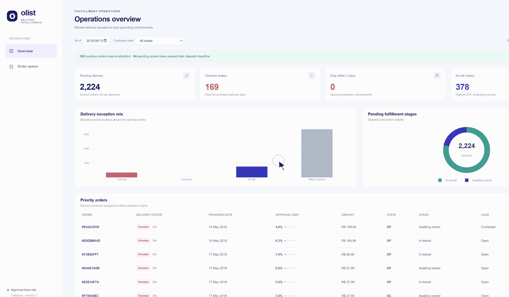

BUSINESS OPERATIONS / APPLIED MACHINE LEARNING
Olist Fulfillment Risk Monitoring
& Customer Service Tracking
Connects delay risk prediction, order prioritization, order details, and follow-up records across an operations overview, a customer service queue, and model evaluation.
MySQL · 21 tablesCatBoostDashboardHistorical evaluation: identified 162 actual delayed orders with 22.6% recall at the same selection volume.
